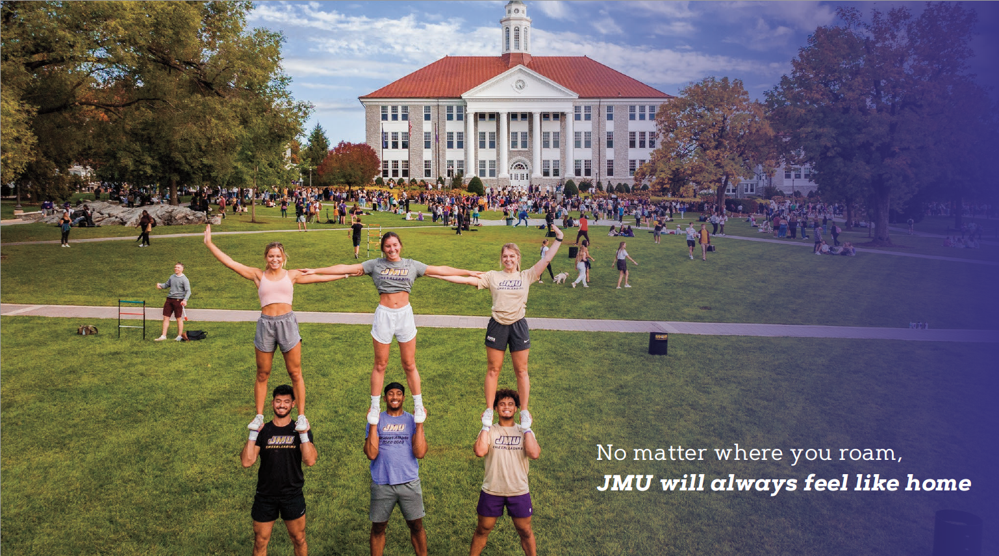
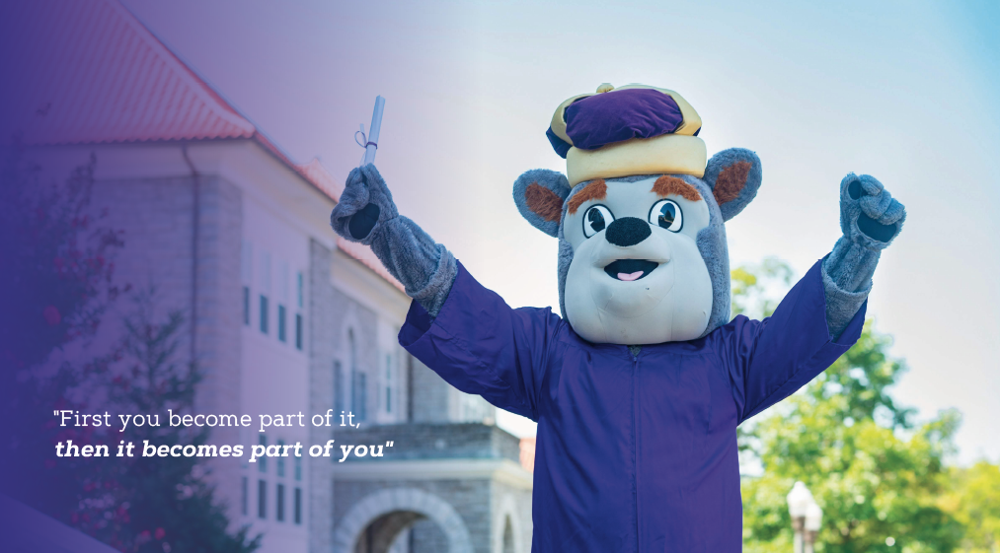
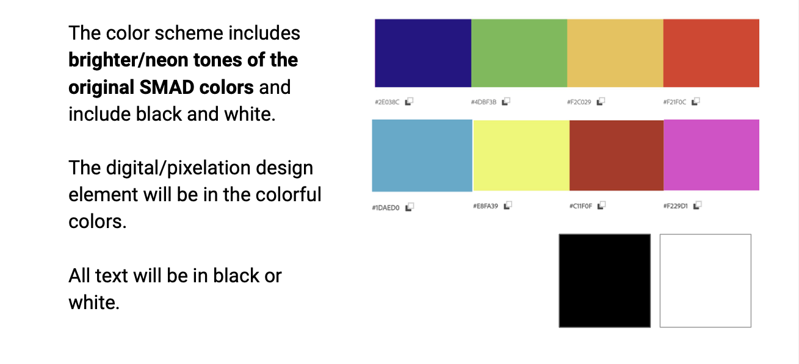
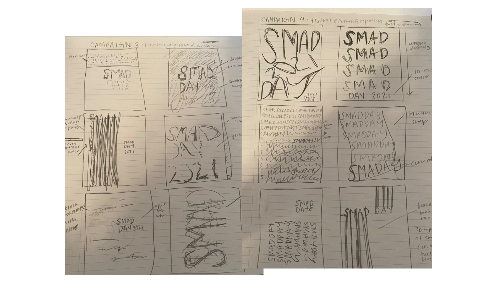
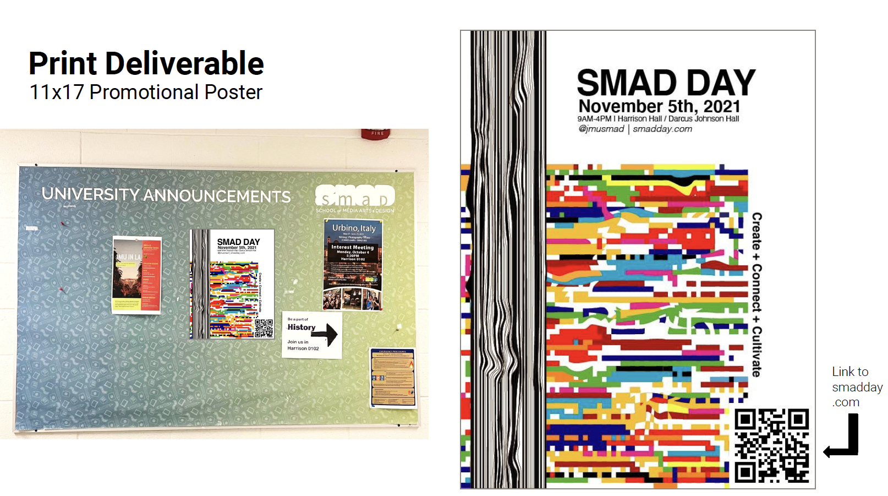

From October 2021-May 2023, I was a Graphic Design Intern for James Madison University in the University Events Department. In this role, I oversaw all design and branding within the University Events Office and collaborated with Acting Director to organize marketing and communication plans for the Office of the President, particularly with commencement. I also prepared and designed high-level marketing materials such as printed programs, post-cards, etc. and was the lead Intern with all event marketing materials including groundbreakings, dedications, senior class events, commencement, and more.
Samples


Color Strategy

Moodboard/Inspiration
Pre-liminary Sketches

Deliverables

Hand-coded and designed with love. | Julia Yeager 2023